论文：DualPath: Breaking the Storage Bandwidth Bottleneck in Agentic LLM Inference
作者：Yongtong Wu, Shaoyuan Chen, Yinmin Zhong, Rilin Huang, Yixuan Tan, Wentao Zhang, Liyue Zhang, Shangyan Zhou, Yuxuan Liu, Shunfeng Zhou, Mingxing Zhang, Xin Jin, Panpan Huang（北京大学计算机学院、清华大学、DeepSeek-AI）
发表：arXiv 预印本 arXiv:2602.21548，v2，2026-02-26
链接：https://arxiv.org/abs/2602.21548
代码：论文未提供官方仓库链接
Agentic LLM 推理为什么从计算瓶颈退化为存储 I/O 瓶颈？哪些独立因素叠加造就了 PD 分离下 prefill 引擎 storage NIC 的单点饱和？
答案是三个相互独立的因素共同造就。因素一：agentic 工作负载命中率 $\ge 95\%$，prefill 阶段从计算密集退化为 I/O 密集，DS V3.2 660B cache-compute ratio 约 22 GB/PFLOP，Qwen2.5-32B（FP16）更高达 117-267 GB/PFLOP。因素二：硬件代际差距——Ampere 到 Blackwell 期间，GPU FLOPS 增长 28.8× 而 PCIe 仅 2×、HBM 仅 2.4×，I/O-compute 比下降 14.4×。因素三：PD 分离架构把所有 KV-Cache 读取经 prefill 引擎，DE 的 storage NIC 完全闲置。三者叠加让 SNIC 单点饱和成为性能主导。完整论证在第一章。
DualPath 的双路径数据流如何配合 layerwise prefill 在 PD 分离下加载 KV-Cache？PE/DE buffer 与 Full/Layer Block 块布局起什么作用？
DualPath 在传统 storage→prefill 之外新增 storage→decode→CNIC-RDMA→prefill 路径，每层一拍的层粒度流水与计算重叠。块布局上，存储交互用 Full Block（形状 $[\text{layer}, \text{tokens}, \text{bytes}]$），层间传输用 Layer Block（形状 $[1, \text{tokens}, \text{bytes}]$），$n$ 个相邻 Layer Block 可拼成一个 Full Block 避免运行时切块；存储端用 trie 树按前缀寻址 hit KV。PE/DE buffer 是各引擎 host DRAM 上划出的小块，承担 storage↔engine 和 engine↔engine 的中转；DE buffer 的具体动机（TTFT / 显存权衡）见 §4.1 Decode Phase 段。完整论证在第二章。
在什么样的 P/D 比例区间内，双路径不会在 CNIC、PCIe、DRAM 引入新的瓶颈？
论文按节点数 $P$、$D$、单节点 GPU 数 $g$、单 GPU CNIC 带宽 $B$、单节点存储带宽 $sB$、内存带宽 $M$ 推导四组不等式——PE CNIC 写入要 $P/D \ge s/(g-s)$，DE CNIC 读要 $P/D \le (g-2s)/s$，DE CNIC 写要 $P/D \le (g-s)/(2s)$，DE DRAM 写要 $P/D \le (M/(Bs)-3)/2$。合并后即上式。在 $(g=8, s=1, M \approx 500\,\text{GB/s}, B s \approx 50\,\text{GB/s})$ 的典型配置下，可行区间是 $1/7 \le P/D \le 7/2$，覆盖大多数现实部署。完整论证在第三章。
CNIC-centric 流量管理如何把 KV-Cache 流量与模型集合通信隔离开来？为什么不能直接用 GPUDirect Storage 或 CUDA copy engine？
关键改造是把所有进出 GPU 的数据——包括本地 H2D/D2H——都改走 GPU 配对 CNIC 的 GPUDirect RDMA 数据路径，让 CNIC 成为统一的 PCIe QoS 调度器。原因：模型集合通信（EP AllToAll、TP ReduceScatter/AllGather）是亚毫秒级突发，GPU 不支持 PCIe QoS，软件 traffic shaper 无法在其间插空 KV-Cache；GPUDirect Storage / CUDA copy engine 与集合通信共用 PCIe 但没有共享 QoS 通道，会拉爆推理延迟。InfiniBand 用 virtual lanes 把推理通信放高优先级 VL、KV-Cache 放低优先级 VL，配置为 $\texttt{qos\_high\_limit}=240$、$\texttt{vlarb\_high}$ 三条 VL 各 192 权重、$\texttt{vlarb\_low}$ 加 64 权重给一条独立 VL。RoCE 用 DSCP→TC→PFC 队列做等价隔离。附带收益是 RDMA Write 提交约 1 $\mu\text{s}$（doorbell batching 可摊销），优于 cudaMemcpyAsync 的 5-7 $\mu\text{s}$。完整论证在第四章。
Adaptive Request Scheduler 在 inter-engine 和 intra-engine 两级如何选 PE/DE/读路径与前向 batch？layerwise prefill、dual-path、scheduling 三者的相对贡献是多少？
inter-engine 调度做 PE/DE 配对与读路径选择：PE 分为过载（$\text{tok}_e > \beta$）、短读队列候选（$\text{read}\_q \le \alpha$ 且 $\text{tok}_e \le \beta$）、长读队列候选，FIFO 优先短读队列候选中 $\text{tok}_e$ 最小者；DE 跨组按总 token 量最小者，组内按 HBM 预算设阈值 $Z = 1.05 \times \text{平均}$ 选低 token DE；读路径走读队列较短的一侧。intra-engine 只对 PE 做：FIFO packing、attention 层理论计算量由 profiling 拟合、compute quota 300 ms、超限时对请求的 bsz 二分做 chunked prefill，对齐 EP/DP 同步点。消融显示在 DS 660B 64K MAL、1024/2048 agents 上：仅加 layerwise prefill 平均 $-17.21\%$ JCT，再加 dual-path 平均 $-38.19\%$ JCT，再加 scheduling 平均 $-45.62\%$ JCT。dual-path 是主要收益来源，scheduling 进一步把 SNIC Max/Avg ratio 从 1.53（对照 round-robin）提升到 1.18、attention 层 Max/Avg 控制在 1.06。完整论证在第五章与第六章。
贯穿示例：64K MaxLen、append 平均 429、命中率 98.7% 的 agent round，模型为 DS 660B、部署 2P4D（构造示例：按 64K 数据集平均 trajectory 取值，trace 单条 trajectory 包含约 32721 个 context token 与 429 个 append token、context 全 hit 时 hit 数 $\approx$ 32721、miss 数 = 429；为便于 P/D 区间与调度章节代入，本章用 32721 hit + 429 miss 作为代表数字，但凡涉及 "hit + miss" 之和与 trace 平均命中率，需按此口径理解）。在第一章里它是「为什么是 I/O 瓶颈」的具体场景；在第二章里它先后走 PE read path 与 DE read path；在第三章里它用于代入 $1/7 \le P/D \le 7/2$ 的典型区间；在第五章里它被分到 read_q 短、tok_e 小的 PE，DE 端走 Z 阈值下的低 token DE；在第六章里它对应 64K MAL / 1024 agents 下 1.87× 离线加速的每一条 trajectory。
本章回答 Q1：DualPath 想解决的问题不是「PD 分离不够好」，而是「在 agentic 工作负载下，PD 分离把整个系统的瓶颈从 GPU 计算搬到了 storage NIC」。本节先量化三因素，再回答为什么过去没人加第二条路径。
论文给出的生产 trace（N-1）显示，coding agent 一次完整 rollout 平均 157 轮、平均上下文长度 32.7k token、每轮仅追加 429 token——这意味着 98.7% 的 prompt token 在每轮都被复用，KV-Cache 命中率极高（N-1，相关概念见 moe-serving §5；attention 与 KV-Cache 的基础机制见 standard-attention）。
在这样的负载下，prefill 阶段不再是计算密集——绝大部分 token 的 KV-Cache 已经存在于存储中，prefill 引擎要做的只是从存储中把这些 KV-Cache 拉回来重新放进 HBM，并计算少量 miss token 的新 KV-Cache。一个量化指标是 cache-compute ratio，论文定义为「每 PFLOP 计算所需加载的 KV-Cache 数据量」，单位 GB/PFLOP。下表给出几个模型在 16K-64K context、append 长度 429、FP8（除非另注）下的比值：
| 模型 | cache-compute ratio (GB/PFLOP, 16K-64K) |
|---|---|
| Qwen2.5-32B（FP16） | 117-267 |
| GPT-OSS-120B | 47-95 |
| Qwen3-235B-A22B | 39-60 |
| DeepSeek-V3.2 660B | 13-36 |
| DeepSeek-V3 660B | 4.8-5.8 |
表 1：不同模型在 agentic 负载下的 cache-compute ratio。Qwen2.5-32B 的 FP16 KV-Cache 比 V3.2（采用 MLA，KV-Cache 已被高度压缩）高出一个数量级。V3.2 因 sparse attention 进一步降低计算量，比值反而比 V3 高。本文以 V3.2 660B 的 22 GB/PFLOP（论文 §3 正文给出的代表数字，Table 1 单独列 13-36 GB/PFLOP，16K-64K 区间）作为引用依据。
把视野从「这一代硬件够不够」拉到「代际之间谁在涨谁不涨」会更清楚。下图给出 2020-2024 四年间 GPU 三个关键指标的代际增长（Fig.3 左侧）：
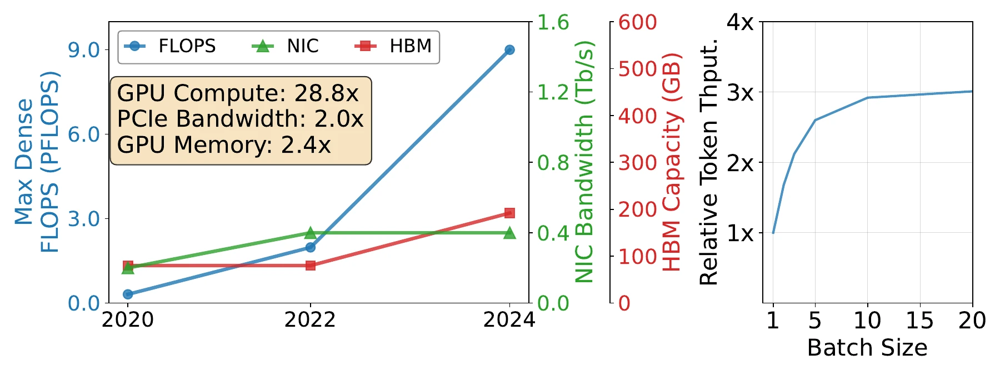
图（原文 Figure 3）：左：FLOPS、PCIe 带宽、HBM 容量 2020-2024 年增长率。FLOPS 28.8×，PCIe 仅 2.0×，HBM 2.4×，I/O-compute 比下降 14.4×。右：在 30K context、append 300 tokens 的请求下，相对 token 吞吐随 batch size 上升，batch size 10 之后收益趋平（5→10 仍有约 16% 提升，10→20 接近饱和）。
代际差距的工程含义是：每出一代新 GPU，理论上能算得更快，但能「喂进来」和「存下来」的数据增长速度远远跟不上。在 agentic 这种高命中率负载下，「喂数据」就是直接瓶颈。
关于 MoE、MLA、DSA、GQA 的背景知识，deepseek-moe、mla、dsa、mqa-gqa 有相关页面。
第三个因素是 PD 分离架构本身的设计选择（moe-serving §7）。在 DistServe、Splitwise 等工作确立的 PD 分离模式下，prefill 引擎（PE）负责处理 prompt 并把生成的 KV-Cache 通过 RDMA 发送给 decode 引擎（DE），DE 负责自回归生成。KV-Cache 跨轮复用，落到外部存储（论文用 DeepSeek 的 3FS）。
这个分工决定了一个不对称：每次需要复用 KV-Cache 的请求，prefill 引擎都要从存储读回自己的 KV-Cache；DE 引擎在这个过程中完全没有承担任何 storage I/O。下图把这种不对称画成视觉对比：
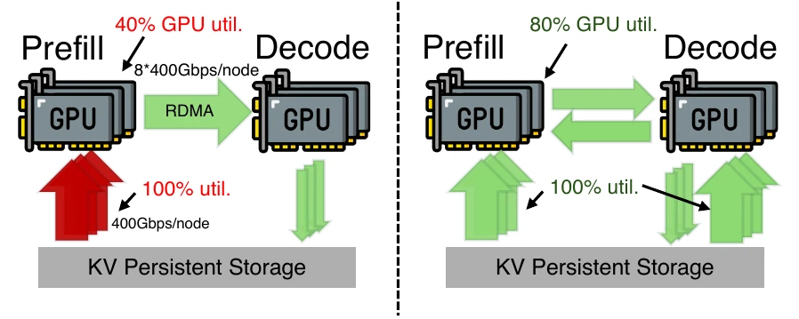
图（原文 Figure 1）：左：现有 PD 分离架构，PE 节点 storage NIC 100% 饱和、GPU 利用率 40%，DE 节点 storage NIC 完全空闲。右：DualPath 双路径，让两侧 SNIC 都参与加载、把 GPU 利用率推回 80%。这是 DualPath 名字的由来——一条路径不够，要两条。
为什么以前没人加第二条路径？论文 §1 简要列了几条原因：Mooncake（FAST'25）走的是「DRAM 池」路线，把 KV-Cache 缓存到分布式 DRAM 再用亲和性调度提高命中率。但 DRAM 池在两类场景不适用：rollout 阶段（agentic RL 训练中的 trajectory 采样）DRAM 被训练状态占用；在在线服务下 working set 可以远超 DRAM 容量（论文 §9 给出 DS 660B 在 0.45 APS 下 working set 达 681 GB），相对 SSD 不具备成本优势。Strata（论文 bib 为 @misc，无具体会议字段；外部资料常称 ATC'24 但论文未确认）在 §9 Related Work 段被列为相邻工作，走「层次化存储 + GPU 辅助 I/O 调度」路线；KVPR、TailorKV 同样在 §9 Related Work 段被列，走「单数据路径内压缩 / 重叠」路线——这些工作都未打破「只走一条 SNIC」这一根本假设。
DualPath 的核心观察是：DE 节点的 storage NIC 是闲置的；compute NIC 在算子间突发之间也是相对空闲的；这两类闲置资源合起来足以承载第二条 KV-Cache 读取路径。问题是如何让这两类资源被利用而不在流量上把模型推理本身挤爆，这正是后文第五章要解决的。
trace 显示命中率 98.7% 与 cache-compute ratio 22 GB/PFLOP 是怎么量化的？后者为何按模型差异可达两个数量级？
命中率 $1 - \text{append} / \text{context}$ 直接由 trace 给出：157 轮平均、32.7k 上下文、429 追加 → $1 - 429/32721 \approx 98.7\%$（N-1）。cache-compute ratio 取决于 KV-Cache 字节数与计算量之比。MLA 与 DSA 都会显著压缩 KV-Cache（DS V3.2 因 DSA + MLA 双重压缩，ratio 仅 13-36 GB/PFLOP），而 Qwen2.5-32B 仍用 GQA + FP16 KV-Cache，ratio 跃升到 117-267 GB/PFLOP。代际上，Ampere→Blackwell 算力涨 28.8× 而 PCIe 仅 2.0×，I/O-compute 比下降 14.4×（Fig.3 左侧，N-4）。三者共同决定在 agentic 负载下 SNIC 是主导瓶颈。
本章回答 Q2：DualPath 的两条路径在 PD 分离架构下如何配合 layerwise prefill 加载 KV-Cache，PE/DE buffer 与 Full/Layer Block 块布局起什么作用。
DualPath 不改变 PD 分离本身——prefill 与 decode 仍然在不同引擎上完成——而是在 storage→PE 之外新增一条 storage→DE→CNIC-RDMA→PE 的路径。两条路径的选择在请求粒度上由调度器决定，每层一拍地与 layerwise prefill 流水重叠。
layerwise prefill 的动机与做法（moe-serving §5、LayerKV、PrefillOnly）已被独立工作充分讨论：LLM attention 层有强 locality，每层只需要本层的 KV-Cache，因此可以把 KV-Cache 按层分配与释放，GPU 上只需保留一层的 KV-Cache，把 prefill 的有效 batch size 提升到 token × 层的规模。DualPath 直接采用 layerwise prefill 作为前置，本节重点描述它如何与双路径加载耦合。
用贯穿示例代入：64K MaxLen 下按 trace 平均一条 trajectory 含 32721 hit token 与 429 miss token（命中率 1 − 429/32721 $\approx 98.7\%$）。layerwise prefill 把每层 KV-Cache 单独传输，因此每层传输的数据量大致是 32721 token × bytes per token（Full Block 维度）；两条路径都按这一粒度逐层流水。
下图（图 4 左）是 PE read path 的数据流。圆角矩形是各组件，紫色箭头是 Full Block（[layer, tokens, bytes]），浅紫色箭头是 Layer Block（[1, tokens, bytes]），标签 (1)-(9) 是步骤序号：
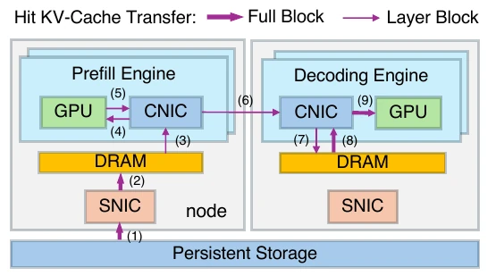
图（原文 Figure 4 左）：PE read path。Persistent Storage 的 hit KV-Cache 按 Full Block 粒度经 PE 节点 SNIC (1) 写入 PE DRAM (2)，PE CNIC 把 Layer Block 喂给 PE GPU (3)(4) 进行本层 attention 与 miss token 的 KV 计算，完成后 PE CNIC 把新生成的 Layer Block 推回 DRAM (5)，再由 PE 节点 CNIC 经 RDMA 把 Layer Block 发到 DE 节点 (6)，DE CNIC 把 Layer Block 写入 DE DRAM (7)，再交 DE CNIC 喂 DE GPU (8)(9)。步骤 (3)–(7) 按层重复 $n_\text{layer}$ 次（原文 §4.1 明确：「This process (3-7) repeats $n_\text{layer}$ times」）；步骤 (1)(2) 是按 Full Block 读存储的一次性动作，步骤 (8)(9) 是 decode 阶段前把完整 prompt KV-Cache 从 DE buffer 经 H2D 写入 DE GPU 的一次性动作。
关键时序：第 $k$ 层的 KV-Cache 加载与第 $k$ 层 attention 重叠；第 $k$ 层的 attention 与第 $k$ 层 FFN 重叠；第 $k$ 层 FFN 与第 $k+1$ 层的 KV-Cache 加载重叠。论文把这一流水称为「layer-wise streaming」（§4.1，3-7 步对每层重复）。
下图（图 4 右）是 DE read path。蓝色箭头是 Full Block，浅蓝色箭头是 Layer Block：
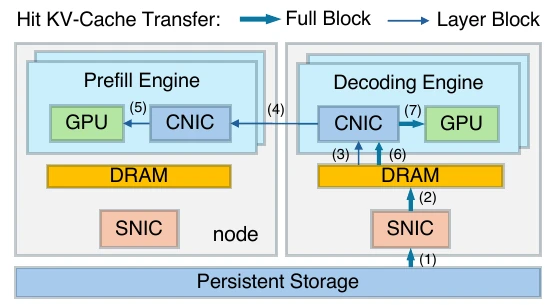
图（原文 Figure 4 右）：DE read path。Persistent Storage 的 hit KV-Cache 按 Full Block 粒度经 DE 节点 SNIC (1) 写入 DE DRAM (2)；DE CNIC 把 Layer Block 沿 compute NIC 经 RDMA 发到 PE 节点 (3)(4)；PE CNIC 把 Layer Block 喂给 PE GPU (5) 进行本层 attention 与 miss token 的 KV 计算。步骤 (3)–(5) 按层重复 $n_\text{layer}$ 次（原文 §4.1：「This process (3-5) repeats $n_\text{layer}$ times」）；per-layer 期间，PE 算出的 miss token KV-Cache 通过 compute NIC 沿 RDMA 回写到 DE buffer 与已有 hit token KV-Cache 合并（这一回流步骤在原图中未单独标号）。步骤 (6)(7) 是 decode 阶段前的一次性 H2D：DE CNIC 把 DE buffer 完整 prompt KV-Cache 经 CNIC 写入 DE GPU (6)(7)，不是 per-layer。
与 path A 的关键区别：path B 让 DE 节点的 storage NIC 参与了 KV-Cache 读取；hit KV-Cache 经 DE 节点的 DRAM 与 CNIC，再由 compute NIC 的 RDMA 转发到 PE 节点。PE 节点只承担计算与少量 miss token 的新 KV 生成，不直接读存储。
块布局是双路径能流水起来的关键。论文设计两种块：
转换关系简单：$n$ 个相邻 Layer Block 在内存布局上连续，可直接拼成一个 Full Block，避免运行时切块拷贝。论文把这个性质作为设计点（§11.5「KV-Cache Block Layout」）。
存储端的 KV-Cache 索引用 trie 树：每个 trie 节点对应一个 Full Block，按 token 前缀定位。命中查询时，从请求的 prompt 前缀沿 trie 找到最长 hit 区间，再按 Full Block 读出。这一设计沿用业界 prefix cache 的常规做法，但与 layerwise prefill 的耦合让 block_size 远小于传统非分层方案。
PE/DE buffer 则是各引擎 host DRAM 上划出的小块缓存，承担两类中转：storage↔engine 之间（F-1、F-2 描述的每对 PE-DE 存储侧流量都先经过 buffer），以及 engine↔engine 之间（CNIC 的 RDMA 写入也要在 DRAM 上落一次）。论文 §4.1「Prefill PE read path」末段解释：刻意不绕过 buffer 直接走 GPU Direct RDMA，是因为 TTFT 在 agentic 场景下占总时延比例不可忽略，buffer 可以减少 GPU 显存瞬时占用；但更关键的是，让 H2D/D2H 也走 CNIC 是第五章流量隔离方案的统一设计。
为什么 DualPath 必须与 layerwise prefill 配套？没有 layerwise prefill 时双路径能工作吗？
layerwise prefill 让 GPU HBM 在任意时刻只需保留一层的 KV-Cache，传输也按层粒度推进。这与 Full Block / Layer Block 设计直接配套——如果用非分层 prefill，KV-Cache 必须一次性塞进 HBM，存储读必须一次返回所有层的 KV-Cache，第二条路径的流水优势无从发挥；且 GPU 显存限制会直接限制 batch size。论文 §2 background 明确把 layerwise prefill 与 PD 分离并列为「广泛采用的两项技术」，DualPath 在其之上引入第二路径。
为什么用 trie 树而不是哈希表做 KV-Cache 寻址？
agentic round 的 hit 区间是连续的——「前 32721 个 token 全 hit，后 429 个 token miss」是典型形态。trie 沿前缀逐字符定位最长 hit 区间，可以一次返回整段 Full Block；哈希只能做精确 key 匹配，要为每个 token 单独查一次，粒度不匹配且查询开销爆炸。这一选择继承自业界 prefix cache 设计的通用做法。
本章回答 Q3：P/D 比例在什么范围内，双路径不会在 CNIC、PCIe、DRAM 引入新瓶颈？论文给出四组不等式与汇总区间，本节逐步推导并把典型配置代入验证。
使用如下记号：
假设（论文 §4.2 引言）：PCIe 拓扑良好、每对 GPU-NIC 处于同一 PCIe switch 下；调度均衡使存储读带宽被均匀分摊；计算网无拥塞；存储读带宽饱和，即所有 SNIC 都打到 $sB$。
基本流量单元：在以上假设下，PE read path 上每对 (PE, DE) 的存储侧流量 $T_p = \dfrac{Bs}{D g^2}$（F-1），DE read path 上每对 (PE, DE) 的存储侧流量 $T_c = \dfrac{Bs}{P g^2}$（F-2）。它们的物理含义是：单节点存储总带宽 $sB$ 被 $D \cdot g^2$ 对 (PE, DE) 平摊（这是 PE read path 的分母），或被 $P \cdot g^2$ 对平摊（DE read path）。链路流量是所有使用该链路的 (PE, DE) 对的流量之和。
论文按 PCIe 侧读方向、PCIe 侧写方向逐项推导（§4.2）。这里把中间过程压缩，列出每条不等式的物理含义与最终形式：
PE CNIC 读方向（F-3）：PE 节点 CNIC 涉及两类入方向流量——PE path 步骤 (3)（PE buffer → CNIC）与步骤 (5)（PE CNIC → PE DRAM，对应 Layer Block 推回 DRAM 的 D2H）。两条流量合计 $2 T_p D g = \dfrac{2 B s}{g}$。要求 $\dfrac{2 B s}{g} \le B$，即 $s \le g$（论文 §4.2 原文：$2Bs/g \le B$ 等价 $s \le g/2$ 的更紧条件，但论文取宽容条件 $s \le g$，并在原文写「Since $s \le g$ always holds in practice」按此判断读方向无瓶颈；本页照论文原文照录）。
PE CNIC 写方向（F-4）：PE 节点把本层算完的 Layer Block 推回 PE buffer（PE path 步骤 4），加上 DE 节点把 Layer Block 从 DE buffer 经 CNIC 经 RDMA 写入 PE 节点 CNIC（DE path 步骤 5），合计 $(T_p + T_c) D g = \dfrac{B s}{g}\left(1 + \dfrac{D}{P}\right)$。要求此式 $\le B$：
$$\frac{P}{D} \ge \frac{s}{g - s} \quad \text{(F-5)}$$
DE CNIC 读方向（F-6）：DE 节点从 PE 节点 CNIC 经 RDMA 收 Layer Block（PE path 步骤 8，对应 H2D 之前 RDMA 接收），加上 DE path 步骤 (3)/(6) 的入方向。合计 $(T_p + 2 T_c) P g = \dfrac{s}{g}\left(\dfrac{P}{D} + 2\right) B$。要求 $\le B$：
$$\frac{P}{D} \le \frac{g - 2 s}{s} \quad \text{(F-7)}$$
DE CNIC 写方向（F-8）：DE 节点从 DE buffer 经 CNIC 把 Layer Block 喂给 DE GPU（PE path 步骤 7/9 与 DE path 步骤 7），合计 $(2 T_p + T_c) P g$。要求 $\le B$：
$$\frac{P}{D} \le \frac{g - s}{2 s} \quad \text{(F-9)}$$
DE 节点 DRAM 写方向（F-10）：DRAM 半双工，要把读与写加起来。论文给出 DE 节点 DRAM 总压力为 $(3 + 2 P/D) B s$。要求 $\le M$：
$$\frac{P}{D} \le \frac{M/(B s) - 3}{2} \quad \text{(F-11)}$$
以 PE CNIC 写方向为例：PE 节点上有两类出方向流量——PE path 步骤 4（PE→PE buffer）与 DE path 步骤 5（DE 节点 RDMA 写入 PE 节点 CNIC）。DE path 步骤 5 的出方向不在 PE 节点上，它从 DE 节点出发经 DE CNIC 走 RDMA 写入 PE 节点 CNIC；DE CNIC 是出方向但对端是 PE 节点 CNIC，所以它的 PCIe 写压力在 DE 端计入（F-8），不在 PE 端。PE 端只算自己出方向的 PE path 步骤 4，加上从 DE 端过来的 RDMA 写入流量计入 PCIe 总入方向。但 F-4 把这两项都放在 PCIe 侧总流量里——这是因为 PCIe 是双向总线，论文把双向流量都计入「PCIe 侧总压力」做单边不等式近似。其他三个不等式用相同近似，详细见 §4.2。
把四组不等式合起来：
$$\frac{s}{g - s} \le \frac{P}{D} \le \min\!\left\{\frac{g - 2 s}{s},\ \frac{g - s}{2 s},\ \frac{M/(B s) - 3}{2}\right\} \quad \text{(F-12)}$$
代入论文实验的典型配置 $(g = 8,\ s = 1,\ M \approx 500\,\text{GB/s},\ B s \approx 50\,\text{GB/s})$：
因此 $1/7 \le P/D \le 7/2$，即 P 节点数约为 D 节点数的 0.14-3.5 倍。覆盖大多数现实部署。
用贯穿示例代入：DS 660B 2P4D 时 $P/D = 0.5$，落在 $[1/7, 7/2]$ 内（确实在实验配置里）；DS 27B 1P1D 时 $P/D = 1$，也落在区间内。但 DS 27B 的实验还测了 2P1D（$P/D = 2$）与 1P2D（$P/D = 0.5$），同样都在区间内。
需要警惕的是越界情况：极端不平衡的 1P7D 或 7P1D 已经不在区间内。论文没有跑这些配置，实验上是否仍能工作没有验证——区间推导是充分条件，不是必要条件。
汇总区间里 $(g-s)/(2s)$ 比 $(g-2s)/s$ 更紧是巧合还是一般规律？
$(g-s)/(2s) \le (g-2s)/s$ 等价于 $g - s \le 2(g - 2s)$，即 $s \le g/3$。在论文的 $g=8, s=1$ 配置下 $s = 1 < 8/3$，条件满足；这是单节点存储 NIC 带宽远小于 compute NIC 聚合带宽时的常态，$g/s$ 越大越紧。所以 (g-s)/(2s) 几乎总是汇总上界的「实际值」，(g-2s)/s 在更激进的存储 NIC 配置下才会更紧。论文把这个差别写进 §4.2 Summary 但没显式说「永远选 (g-s)/(2s)」，正文按 §4.2 原文照录。
本章回答 Q4：DualPath 在 compute NIC 上把 KV-Cache 流量与模型集合通信隔离开来，不让第二路径的引入拉爆推理延迟。
推理过程中至少有三类计算网流量要保护（gpu-communication、moe-serving §3）：
这些通信有几个共同特点：
GPU 目前不支持 PCIe QoS（论文 §5 引言段引用 7723586），所以 PCIe 层无法对不同流量做优先级区分。这意味着如果在 PCIe 上同时跑 KV-Cache 流量与集合通信，两者会互相抢占 PCIe 带宽，而 KV-Cache 流量通常数据量更大，会把集合通信的延迟拉高。论文把这条限制作为关键论据。
另外两条候选方案也都不够用：GPUDirect Storage 直接把存储数据落到 GPU HBM，但跳过了 PCIe 流量隔离机制；CUDA copy engine（cudaMemcpyAsync）走 PCIe 但没有与 compute NIC 共享的 QoS 通道；两者都不能避免与集合通信竞争 PCIe。
DualPath 的方案是反其道而行之：把原本可以直接落到 GPU HBM 的 KV-Cache 流量，也改成走 GPU 配对 CNIC 的 GPUDirect RDMA 路径。这条路径在数据上比 GPUDirect Storage 远（先到 host DRAM，再从 host DRAM 走 RDMA 到 GPU HBM），但换来的是——所有数据流量都过 compute NIC，CNIC 的 virtual lane arbiter 可以做统一的 QoS 调度。
具体实现（论文 §5.2）：
CNIC 成为 PCIe QoS 的统一调度器，PCIe 上只有两类出方向流量——集合通信与 CNIC 触发的 RDMA 写——它们都进 CNIC 的 virtual lane arbiter 排队。论文 §5 引言段明确指出这是「in our production deployment widely adopted」的设计（说明这不是 DualPath 的新发明，而是 DualPath 借用了生产环境已有的 QoS 模式）。
InfiniBand 在链路层有最多 16 条 virtual lane（VL），VL arbiter 在 NIC 和交换机上各自按权重分配。论文（§5 + Appendix §11.1）给出的实测配置：
qos_max_vls 4：启用 4 条 VLqos_high_limit 240：高优先级仲裁器占用总流量的 $240/255 \approx 94\%$qos_vlarb_high 0:192, 1:192, 2:0, 3:192：高优先级仲裁器内 VL0/1/3 各分配 192 权重（VL2 不用于高优先级）qos_vlarb_low 0:192, 1:192, 2:64, 3:192：低优先级仲裁器内 VL0/1/3 沿用 192 权重，VL2 分配 64 权重作为 KV-Cache 专用 VL工作原理：高优先级仲裁器在 $240/255 \approx 94\%$ 的时间内只放行 VL0/1/3（推理通信），剩余 ~6% 切换到低优先级仲裁器放行 VL2（KV-Cache 流量）。这样推理通信几乎不受 KV-Cache 影响，KV-Cache 也能用上 compute NIC 闲置时的剩余带宽。
论文（§5.1 Traffic Isolation）文字写「approximately 99% of total bandwidth to high-priority VL」是粗略说法；按具体配置反推实际比例由 qos_high_limit=240/255 决定，约为 $94\%$。本节按实际配置数值描述。
RoCE（RDMA over Converged Ethernet）用 DSCP（Differentiated Services Code Point）做 IP 层 QoS 标记，交换机和 NIC 上的硬件队列（TC，traffic class，通常 8 条）把不同 DSCP 的流量映射到不同队列，每个队列走独立的 Priority Flow Control（PFC）做无损流控。论文（§5 末段、Appendix §11.1 RoCE 段）描述：配置四个 lossless RDMA TC，对应 IB 的四 VL；按比例分配权重，绝大部分给推理通信，留小部分给 KV-Cache 以避免饿死。
新兴的 Ultra Ethernet 与 UnifiedBus 也都收敛到类似的 QoS 机制，因此 DualPath 的设计原则可以平移过去（论文 §5 末段）。
另一个意外收益是性能。论文 §5.2 末段给的实测：单次 cudaMemcpyAsync 调用在闭源 CUDA 驱动上耗时 5-7 $\mu\text{s}$，作者无法进一步细分（CUDA 闭源），但整体数字在多次小数据块复制场景下会成为瓶颈。RDMA Write work request 提交只需几次 mmio 写 NIC 寄存器，整体约 1 $\mu\text{s}$；且通过 doorbell batching 可以把多次提交合并成一次 mmio 写。
这一收益不是 DualPath 的主目标，但解释了为什么生产环境愿意用 CNIC 走「绕路」而不是直接走 CUDA copy engine。
为什么 GPUDirect Storage 不能直接复用 compute NIC 的 QoS 机制？
GPUDirect Storage 是 NVIDIA 提供的「存储后端直读 GPU HBM」技术，数据从 SSD 经系统总线或存储 NIC 直达 GPU HBM，跳过 host DRAM。它在数据路径上不经过 compute NIC，所以 compute NIC 的 VL 仲裁器看不到这部分流量，也就无法对它做 QoS 调度——它会与 compute NIC 上的集合通信在 GPU 的 PCIe 上游共享带宽，但 QoS 控制不到那里。CNIC-centric 方案刻意让数据「绕路」经 host DRAM 再走 compute NIC，就是为了把这条流量纳入 VL 调度。
本章回答 Q5 的上半：调度器在两级上如何选 PE/DE/读路径与前向 batch。
调度器首先把引擎按组组织。约束：同一节点的所有 engine 在同一组；组内 engine 全部是 PE 或全部是 DE。每个组有一个 leader engine 负责与调度器通信，其他 engine 在 leader 带领下协作。每个 engine 在被调度器询问时上报三个数：
论文 §6 把 token 数作为 GPU 负载、磁盘读负载、网络负载的统一代理——这三者都强相关于 token 数。调度目标是在所有 engine 间平衡 $\text{tok}_e$。
PE 调度把 engine 分为三类，按 FIFO 顺序把请求分到「最好」的候选。三个分类：
参数（Appendix §11.4 Configuration Parameters）：$\alpha$ 是 3 秒内可读 token 数，$\beta$ 是 5 秒内单 GPU 可处理 token 数，都由 profiling 预标定。
FIFO 顺序：每个请求 $r$ 进入时，先在第二类候选里选 $\text{tok}_e$ 最小者；第二类空就降级到第三类里选 $\text{tok}_e$ 最小者；两类都空就停止当前 fetch，把已分配的请求交给 leader engine。这一顺序的物理意义：优先短读队列的 PE 是为了避免其 SNIC 闲置（论文 §6：第二类优先级高于第三类是因为「缺乏后续请求会容易导致 storage NIC underutilization」）；长读队列的 PE 也接请求但要排队；过载的不再接。Algorithm 1 给出完整伪代码：
输入：等待队列 Q；PE 组 G_PE；各 engine e 上报的 (read_q_{n(e)}, tok_e)；
常数 alpha（短读队列阈值）、beta（未完成 token 上限）
输出：本轮 fetch 分配给各 PE 的请求
1. 把 G_PE 内所有 e 分为三类：
C1 = { e ∈ G_PE : tok_e > beta } // 过载
C2 = { e ∈ G_PE : read_q_{n(e)} <= alpha
∧ tok_e <= beta } // 短读队列候选
C3 = { e ∈ G_PE : read_q_{n(e)} > alpha
∧ tok_e <= beta } // 长读队列候选
2. while Q 非空：
r = Q.head
if C2 非空：
pe* = argmin_{e ∈ C2} tok_e
else if C3 非空：
pe* = argmin_{e ∈ C3} tok_e
else：
本轮 fetch 终止，把已分配请求返回给 leader engine
break
把 r 分配给 pe*
tok_{pe*} = tok_{pe*} + tokens(r)
从 Q 中移除 rDE 调度两级是因为 DE 端的 HBM 容量是稀缺资源，需要在分配前先预估能不能装下。
Phase 1（跨组）：每个 DE 组有一个私有队列与一个全局等待队列。DE 组 fetch 时，从全局队列里按组把请求分到 $\sum_{e \in \text{组}} \text{tok}_e$ 最小的组（沿用 inter-PE 的 token 数代理）。这一步平衡组间的 NIC 与 GPU 负载。
Phase 2（组内）：
Z 阈值取 1.05 倍均值是论文 §6 给出的经验值，留 5% 余量以容忍 HBM 碎片与估计误差。
为请求选好 PE 与 DE 之后，再选读哪条路径。论文 §6 KV-Cache Read Task Scheduling 段：选读队列较短的一侧。把单个请求的 KV-Cache 拆为两半分别从 PE 与 DE 读是更激进的做法，论文把它列为未来工作。
intra-engine 调度只对 PE 端做——DE 端所有请求都直接进 forward batch。PE 端需要 batch 组成决策的原因是：DP（数据并行）组下，所有 GPU 必须在 attention 之后进入 FFN 阶段时同步；如果各 GPU 的 attention 耗时差异过大，慢的 GPU 会拖同步点产生 bubble。
Layer Time Estimation：每个请求描述为 $(\text{cached}, \text{bsz})$ 对——$\text{cached}$ 是已经有 KV-Cache 可命中的 token 数（来自存储命中或前次前向），$\text{bsz}$ 是本次前向 batch 中需要计算 KV-Cache 的 token 数。从这些对可以算出 attention 层的理论计算量，进而由 profiling 拟合的硬件/并行配置曲线估出执行时间（论文引用 PrefillOnly 与 SarathiServe 的类似做法）。
Algorithm：FIFO 顺序往 batch 里加请求；只要预测的 attention 层执行时间不超过 compute quota（论文取 300 ms，Appendix §11.4）就继续加；超限时对当前请求的 $\text{bsz}$ 做二分搜索找到能装下的 $\text{bsz}'$，对这部分做 chunked prefill，下个 forward batch 再处理剩余 $\text{bsz}$。
下图给出直观对照：
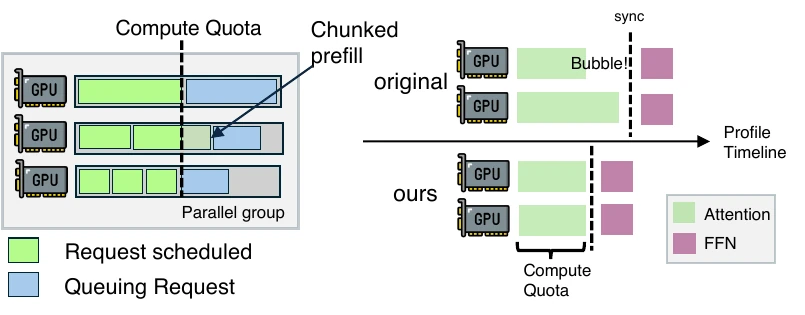
图（原文 Figure 6）：左：parallel group 内多个 GPU 的 batch 装填。每个 GPU 优先按 FIFO 装入请求，逼近 compute quota 后做 chunked prefill（蓝色小段），让 attention 层耗时尽量对齐。右：GPU 时间线对比。原始方案各 GPU attention 耗时不一，同步时产生 bubble；ours 方案按 compute quota 对齐后 bubble 显著缩短。
论文 §8.5 末段给出实测：1152 GPU 部署下调度器 CPU 占用 < 10 cores。调度器设计为集中式（一个 scheduler 进程），但只做粗粒度的请求分配与路径选择，详细决策（如本组的 intra-engine batch 组成）由各组 leader engine 在本地完成。这是把调度开销摊到多个节点上，避免单点瓶颈。
为什么 Z 阈值取 1.05 倍均值而不是 1.0？
HBM 分配并非完美连续——已分配的 KV-Cache 块在 HBM 中可能存在碎片，导致实际能装下的请求数低于「按总容量简单算」的结果。1.05 倍均值是经验上能覆盖大多数碎片场景的余量。论文没有给出碎片对 Z 影响的精确分析，Appendix §11.4 也只说「profiled in advance」，因此 1.05 是工程经验值而非理论最优。
intra-engine 调度只对 PE 做、DE 端所有请求都进 batch，DE 端会不会因为 KV-Cache 增长导致 HBM 耗尽？
DE 端每次 forward 只生成一个 token（或 speculative decoding 一次生成多个），KV-Cache 增长量等于已生成 token 数，量级有限。同时 DE 端的 batch size 受访存带宽与 KV-Cache 大小共同约束，不可能无限放大。inter-engine 的 DE Phase 2 在分配阶段已经做了 HBM 预算检查，intra-engine 阶段不需要再做 HBM 控制。
本章回答 Q5 的下半：实验数据如何对应到机制。
集群（N-6）：每节点 8 张 NVIDIA Hopper GPU；8 个 400 Gbps RDMA NIC 接 InfiniBand 构成 compute NIC；1 个 400 Gbps NIC 接 3FS 构成 storage NIC；计算网与存储网物理隔离。3FS 集群无内部 DRAM 缓存，能饱和 400 Gbps 存储 NIC 带宽。
模型：
数据集（Table 2，N-7）：3 套生产 agentic RL trace，每套 500 轨迹：
| MaxLen | Turns | Append | Gen | Total | Context |
|---|---|---|---|---|---|
| 32K | 60 | 608 | 148 | 28639 | 17183 |
| 48K | 106 | 474 | 172 | 42607 | 25120 |
| 64K | 157 | 429 | 176 | 55958 | 32721 |
基线：
P/D 默认（N-8）：DS 660B 2P4D、Qwen 32B 1P2D、DS 27B 1P1D。DS 模型用 EP + DP，Qwen 32B 在 DualPath 上用 DP（Attention 阶段），SGL(MC) 用 TP=8（SGLang 不支持该模型的 DP Attention）。
下图（图 7）给出三个模型在不同 MaxLen 与 agents 数量下的 JCT：
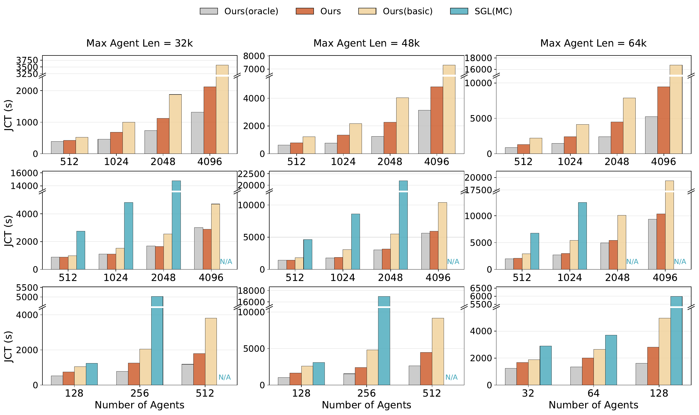
图（原文 Figure 7）：三行分别是 DS 27B（上）、DS 660B（中）、Qwen 32B（下）；三列分别是 MaxLen 32K/48K/64K。SGL(MC) 在大配置报错 N/A；Ours 普遍接近 Ours(oracle)，说明 KV-Cache I/O 已被吃满。Ours(basic) 即论文文字中的 Basic（无 layerwise prefill、无 dual-path、无 scheduling 的原始系统），与 §6.6 消融四档中的 Basic 一致——通常仍大幅高于 Ours，差距由 dual-path + scheduling 补齐。
关键数字（§8.1）：
把贯穿示例代入：64K MAL / 1024 agents 下的 1.87× 加速意味着，把 1024 条含 hit token + miss token 的 trajectory 在同等硬件上从 $T$ 缩短到 $T/1.87$。cache-compute ratio 13-36 GB/PFLOP（DS V3.2 660B，Table 1）原本是 SNIC 单点饱和的量级；DualPath 把所有 6 个节点（2P4D）的 storage NIC 拉进加载后，每秒可加载的 KV-Cache 数据量从 Basic 的 2×400 Gbps（仅 PE 节点能加载）提升到 DualPath 的 6×400 Gbps（PE+DE 共 6 个节点都参与加载），I/O 等待时间相应缩短；DS 27B 1P1D 配置因总节点数仅 2 个，提升幅度受限。
下图（图 9）把每轮的 append 长度按 1×/1.5×/2×/3× 缩放，同样缩放 generation 长度：
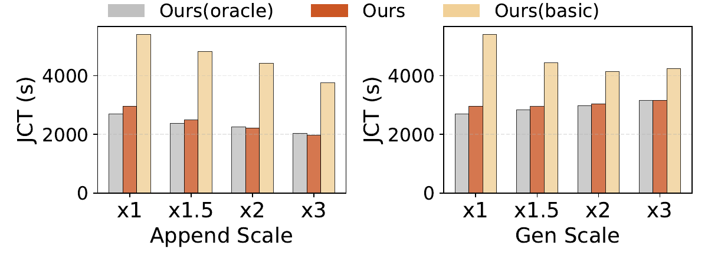
图（原文 Figure 9）：左：append 长度缩放。Basic 随 append 变长 JCT 显著下降，Ours 与 Oracle 几乎不变。物理含义：append 越长 prefill 的计算越多，I/O 压力被计算压力稀释，DualPath 相对 Basic 的优势收窄。右：generation 长度缩放。趋势类似——generation 越长 prefill 与 decode 的间隔越大，I/O 有更多时间错开，I/O 瓶颈被弱化。
论文 §8.1 给出的具体数字：1.82-1.99× 跨 append 缩放。Basic 在 append 3× 时相对 DualPath 的加速比收窄（读 Fig.9 估算约 1.85×），DualPath 仍明显领先；append 越长 prefill 的计算压力越大，I/O 主导减弱但 DualPath 仍未被反超——核心收益来自「I/O 主导」的负载场景。
下图（图 8）给出 DS 27B 在 1P1D、2P1D、1P2D 三种 P/D 比下的 JCT：
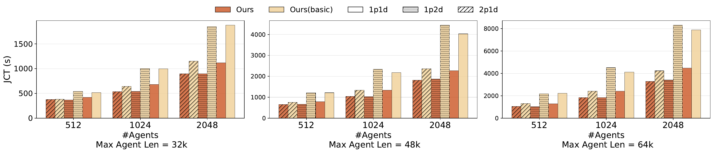
图（原文 Figure 8）：三列分别是 MaxLen 32K/48K/64K，每列内分 1P1D / 2P1D / 1P2D 三种 P/D 比，每组三根柱（512/1024/2048 agents）。Ours 在所有比例上均显著低于 Ours(basic)，但绝对 JCT 随 P/D 比变化不大。
关键的等效关系（§8.1，N-12）：
三对等效直接证明「存储带宽是主导瓶颈」——只要总 storage 带宽相同，无论怎么分 PE/DE 节点，JCT 都接近。DualPath 在所有 P/D 比下的平均加速 1.64×、最高 2.46×。
在线场景的指标是 agent arrival rate per second (APS) 与对应延迟。SLO：TTFT $\le$ 4 s、TPOT $\le$ 50 ms（N-14）。
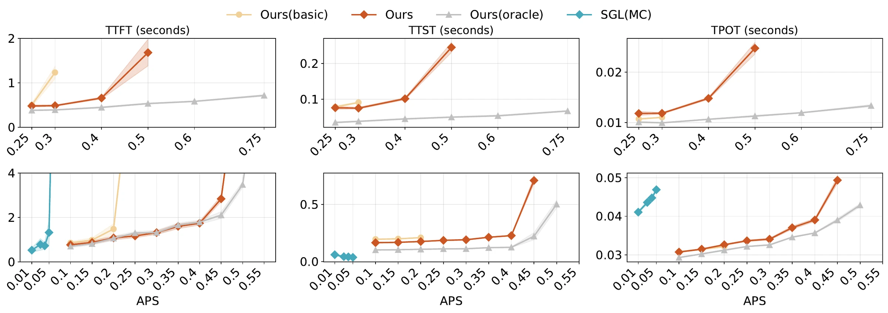
图（原文 Figure 10）：上排 DS 27B、下排 DS 660B。横轴 APS，纵轴分别是 TTFT/TTST/TPOT。Ours 在达到 SLO 之前能承受更高 APS：DS 27B 上 1.67×、DS 660B 上 2.25×。SGL(MC) 未在 DS 27B 上运行（论文 Baselines 段说明 SGLang 不支持该 27B 内部 downscaled 模型）；DS 660B 上 SGL(MC) 有数据点，TTST 异常低（前两个 token 几乎同时到达客户端）论文认为是实现 bug。
下图给出 TTFT 分解：
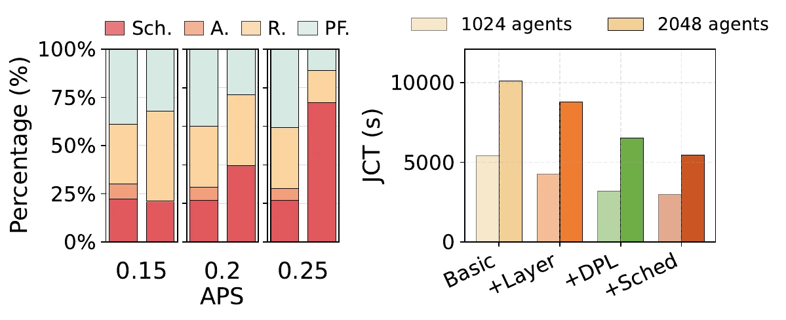
图（原文 Figure 12）：左：TTFT 四段分解——Sch.（调度排队）、A.（分配）、R.（读 KV-Cache）、PF.（prefill）。Basic 的 Sch. + A. 段在 APS 0.25 时占比绝大部分（约 70-80%，Sch. 约 70%、A. 约 3-5%（读图估计）），Ours 的相同段在 APS 0.25 时占比仍稳定。物理含义：DualPath 让 R. 段缩短，排队时间不再因 storage 带宽不足而爆炸。右：消融四档 JCT（1024/2048 agents，64K MAL，DS 660B），详细数字见 §6.6。
工作集估算（F-14）：DS 660B 在线 0.1 APS 69 GB → 0.45 APS 681 GB。论文 §9 指出真实场景若 JCT 因交互间隔增加 $r$ 倍，APS 容量增 $r$ 倍，working set 增 $r^2$ 倍，机时与存储成本 r³ 倍——这是大规模 agentic serving 的根本 sizing 困难（论文原文 $r^3$ 描述为复现该实验的机时+存储开销 scaling，不指部署成本）。
下图给出平均 JCT vs APS：
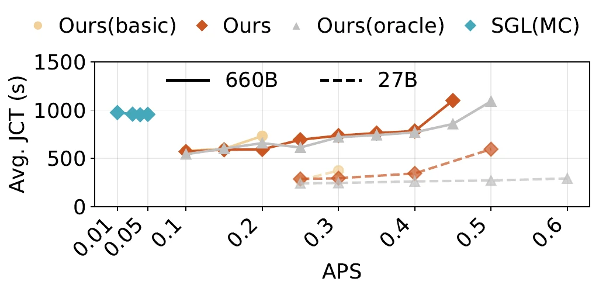
图（原文 Figure serving-jct）：横轴 APS，纵轴平均 JCT。Ours 在 APS 0.45 前与 Ours(oracle) 几乎重合，0.45 之后开始上升。SGL(MC) 未在 DS 27B 上运行（数据点缺失）；DS 660B 上有 SGL(MC) 数据点（论文图上标注为 N/A 或在低 APS 区间）。
论文 §8.4 把 Basic → DualPath 拆成三个组件（layerwise prefill、dual-path loading、scheduling）逐步叠加：在 DS 660B、64K MAL、1024/2048 agents 下：
解读：
下图给出 storage NIC Max/Avg ratio 的时间序列：
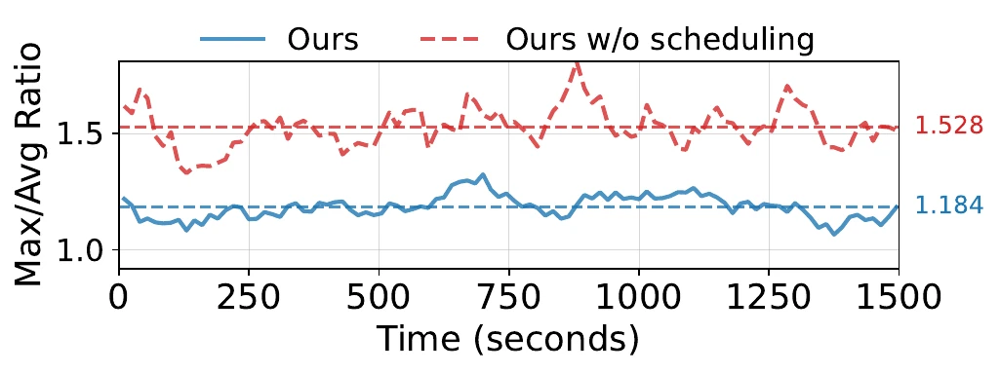
图（原文 Figure 13）：横轴时间（秒），纵轴 Max/Avg ratio。1.0 表示完全均衡，1.18 比 1.528 显著更均衡。这是 §5.2 短读队列阈值 $\alpha$ 与 §5.3 Z 阈值共同作用的结果——PE 调度避开读队列长的节点、DE 调度在组内选低 token 引擎。
下图给出 attention 层 Max/Avg ratio：
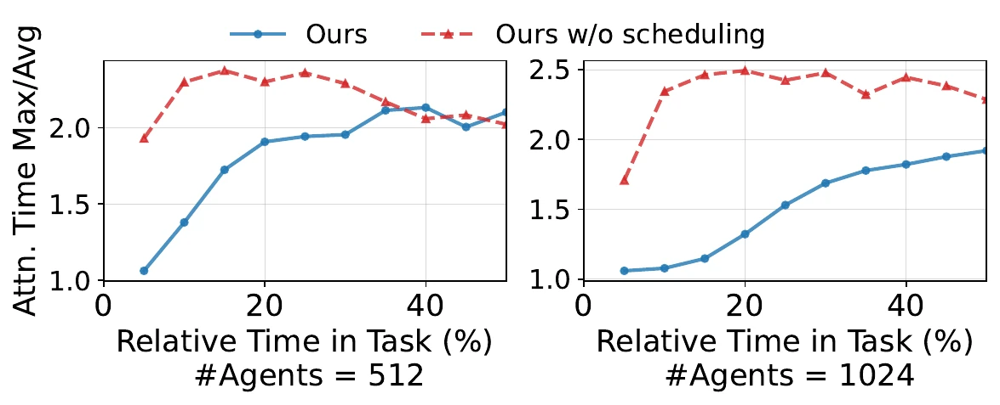
图（原文 Figure 14）：横轴时间，纵轴 attention 层 Max/Avg ratio。任务开始阶段（前 5%）ratio 稳定在 1.06 附近，对应 GPU 同步 bubble 缩短（§5.5 intra-engine compute quota 机制）。任务尾段 ratio 失去物理意义（系统欠载）。
1152 GPU 部署（N-18、N-19）：
下图给出 48P96D 离线 rollout 的详细时间序列：
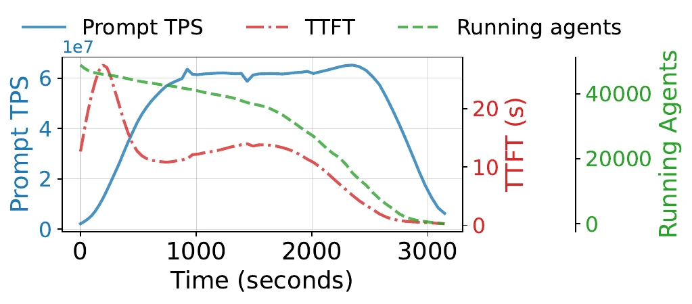
图（原文 Figure largescale_rollout）：横轴时间，纵轴多项 rollout 指标。Prompt TPS 在 48P96D 下保持稳定；调度延迟维持低位。这是「近线性扩展」结论的细粒度证据。
需要说明：论文 §8.5 明确写「due to the lack of fine-tuned parallelism settings and P/D ratios, the large-scale experiments do not demonstrate additional JCT or serving capacity gains compared to multiple small-scale units with equivalent cost」——大规模相对多小集群无额外加速收益。但大规模仍有减少碎片、抗突发的工程价值。
消融里 dual-path 的「主要收益」是相对 Basic 还是相对 Basic + layerwise？
论文 §8.4 的四档是 Basic / +Layer / +DPL / +Sched 逐步叠加，差分是相邻档的相对收益：+Layer 相对 Basic -17.21%，+DPL 相对 +Layer 再 -20.98 个百分点（38.19% - 17.21%），+Sched 相对 +DPL 再 -7.43 个百分点。所以 dual-path 的「主要收益」严格说是在 layerwise prefill 基础上再贡献约 21 个百分点的 JCT 缩短，不是相对裸 Basic 的 -38.19% 整体数字。
本章是分析性评价，内容属于分析性判断，不是论文的结论。
存储 I/O 不再是 PD 分离的瓶颈。在 dual-path + scheduling 的组合下，原本被 prefill 引擎独占的 storage NIC 带宽被扩到全集群所有节点，agentic 推理的 I/O 等待时间被显著压低。1152 GPU 大规模下做到近线性扩展（48P96D vs 2P4D，agent 数 24× 翻倍 JCT 几乎不变）。
给出可证明的 P/D 区间。第四章的不等式推导不是经验调参，而是从 PCIe/CNIC/DRAM 三个物理约束反推的充分条件。读者能据此判断自己的集群配置是否在覆盖范围内（典型 g=8、s=1 下 $1/7 \le P/D \le 7/2$ 覆盖大多数现实部署）。
可复现的 NIC QoS 配置。InfiniBand 四 VL 配置（qos_high_limit=240、vlarb_high/low 权重）与 RoCE DSCP→TC 映射方案都被具体给出，生产部署可以直接照搬。
调度器 CPU 开销 < 10 cores。在 1152 GPU 上调度开销不构成瓶颈，说明 dual-path 不是「用调度开销换系统性能」。
非 agentic 工作负载收益未量化。论文 §1 明确把动机范围限定在 agentic 场景，未量化非 agentic 长上下文（如长文档一次性 prefill）下的加速比；预期会显著低于 1.87×，因为低命中率下 KV-Cache 加载不构成主导瓶颈。
仍依赖存储后端性能。论文用 3FS 假设「无内部 DRAM 缓存，能饱和 400 Gbps SNIC」。其他存储后端（如 Mooncake DRAM 池）若引入额外缓存层，DualPath 的边际收益会改变。
大规模 P/D 比例与并行配置的自动调优。论文 §9 明确把「more adaptive and flexible approaches for parallelism and P/D ratio configuration」列为 future work，包括 simulator 或 online adjustment 机制。
单请求拆为两半分别读。论文 §6 末段把请求拆分为 PE 读一半、DE 读一半的更激进方案列为 future work。当前实现是单请求整体走读队列较短的一侧。
大规模未精调时相对多小集群无明显收益。论文 §8.5 末段：48P96D 与 2P4D 拼接的 24 个小集群在 JCT 与 serving capacity 上接近（资源总量相同）。大规模优势在于减少碎片与抗突发，不在于绝对加速。
如果我的集群 g 不是 8 或 s 不是 1，DualPath 还能用吗？
公式 F-12 是充分条件，不是必要条件。g 变小或 s 变大都会让区间变窄。例如 g=4、s=1 时下界 1/3、上界 min{2, 1.5, M/Bs 决定项}；如果硬件更激进 g=4、s=2，下界 1、上界 min{0, 0.5, ...}，区间为空——这种情况下需要重新审视 SNIC 与 CNIC 的带宽比例设计。论文没有跑非 g=8、s=1 的集群，区间外是否仍能工作没有验证。
本节 C/F/N 编号为来源与范围说明自建索引，与 evidence.md 一致；正文未逐条标注 [C-x] 标记，仅供审计追溯。下表按 C 编号分组列出每条核心论断在原文 §X / Table X / Figure X 中的位置。
页面所有 C 编号论断均来自 arXiv:2602.21548v2。详细定位：
F-1/F-2（每对 PE-DE 流量基本单元）：§4.2 Traffic per PE-DE pair 段。F-3 至 F-12（CNIC/PCIE/DRAM 推导）：§4.2 PE CNIC Bandwidth、DE CNIC Bandwidth、DRAM Pressure、Summary 各段。F-13（Z 阈值）：§6 DE Scheduling Phase 2 段。F-14（working set 估算）：§9 Working Set Analysis 段。
N-1 至 N-26 全部来自论文正文或 Appendix §11；具体实验条件（数据集 500 trajectories、3FS 存储、8×Hopper GPU/节点、IB 400 Gbps CNIC + 1×400 Gbps SNIC、P/D 默认 2P4D/1P2D/1P1D）见 §8.2 Testbed 与 §11.4 Configuration Parameters 段。
页面内嵌的 14 张原图与原文 Figure 编号一一对应：motivation=Fig.3、teaser=Fig.1、dataflow_peread/ceread=Fig.4（左/右子图）、intrasched=Fig.6、rollout_combined=Fig.7、27b_rollout_diffpd=Fig.8、660b_rollout_var_append=Fig.9、660b-27b-serving-aps=Fig.10、660b_serving_breakdown=Fig.12、serving-aps-avg-jct=Fig.serving_jct、read_lb=Fig.13、attn_lb=Fig.14、largescale_rollout=Fig.largescale_rollout。Fig.2 (workload) 与 Fig.5 (intersched) 不在页面复用：trajectory 用文字描述、inter-sched 调度逻辑由 Algorithm 1 伪代码 + 文字承载。所有图通过 pdftoppm 从 TeX 源 PDF 转换为 PNG，再内联 base64，路径为 ../../libs/ 相对引用，无外部依赖。
页面第七章（方法评价）整体是分析性判断，开头已用 callout 标记「不是论文的结论」。其他章节均为论文事实的直接陈述，附原文定位。少数边界性论断（如「DualPath 在非 agentic 场景收益有限」）在正文中标注为推断而非事实。
Algorithm 1 伪代码完全照搬论文 §6 Algorithm 1，仅作为表述算法流程使用，未声明为可运行代码。$Z = 1.05 \times \text{平均}$ 的 $1.05$ 系数来自论文正文，含义是「留 5% 余量容忍 HBM 碎片与估计误差」，论文未给出推导。贯穿示例 64K MaxLen/append 429/32721 hit + 429 miss 是人为设定的最小直接代入（论文 trace 平均 append 429、context 32721；为便于 P/D 区间与调度章节代入，统一采用 32721 hit + 429 miss 作为代表数字，命中率 1 − 429/32721 $\approx 98.7\%$ 与 trace 一致），与论文 trace 数字部分对应、部分构造。
「第二个 storage NIC」与「compute NIC 闲置资源」是辅助解释，不是论文术语；论文严格用 SNIC 与 CNIC。「双路径」是中文翻译，论文英文是「dual-path」。「PD 分离」中文用，全称 Prefill-Decode Disaggregation，moe-serving §5 给出背景。
页面推导假设 PCIe 拓扑良好、调度均衡、计算网无拥塞、存储读带宽饱和（§4.2 引言），这些假设在生产集群上需要验证。第四章的不等式推导是「无新瓶颈」的充分条件，不是「能工作」的必要条件——实际可能存在区间外仍能工作的情况。第五章 vlarb 权重配置按实测给出（§11.1），不同 NIC 厂商或固件版本下可能需要调整。第七章的「解决了什么 / 没解决什么」边界基于论文 §1-9 已陈述内容；论文未做的实验（如非 agentic 工作负载）结论只能由读者自行外推。